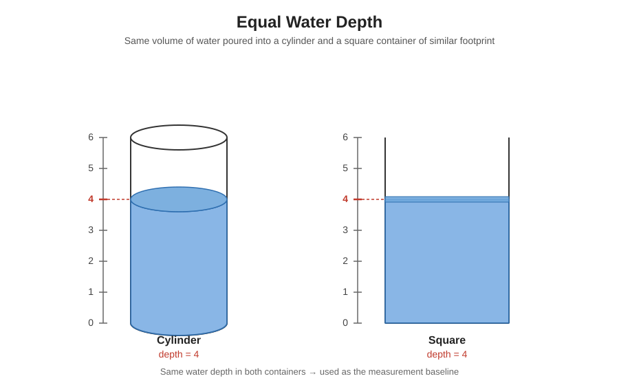
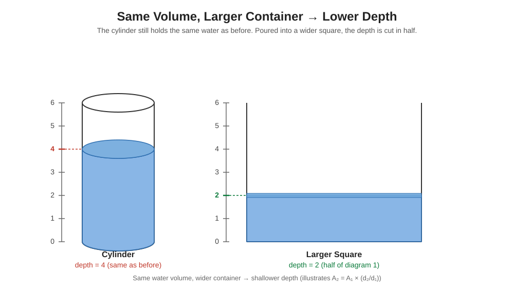

Abstract (in one line)
This method measures equal water volumes in two shapes. Because the same volume = area × depth, comparing depths gives the ratio of areas. That gives the circle's area when you know the area of the reference shape.
What you need (equipment)
- A rectangular container whose area you can measure (a square or rectangle with straight sides). Example: a 20 cm × 10 cm shallow tray.
- A circular container (the circle whose area you want to find).
- A measuring ruler (mm or cm), funnel or small cup to pour water accurately, and a level surface.
- A notebook to record depths (write units: cm or mm).
Tip: Work on a flat, level table and measure depths at the center of each open-top container. Avoid splashes and read the ruler at eye level to reduce error.
The method — step by step
- Measure and record the area of your rectangular reference container. If it's a 20 cm × 10 cm tray, its area is A_rect = 200 cm².
- Fill the rectangle with water to any depth and note that depth as d_rect (for example, 4.0 cm).
- Carefully pour that same exact water into the circular container and measure the resulting depth there — call it d_circle (for example, 2.0 cm).
- Use the formula below to compute the circle's area.

Why this works (simple math)
When two containers hold the same water volume, the volume V equals area × depth for each shape:
V = Arect × drect = Acircle × dcircle
Rearrange to solve for the circle's area:
Acircle = Arect × (drect ÷ dcircle)
Important: The ratio uses d_rect ÷ d_circle (not squared). Use the same units for depths (for example, both in cm).
Simple worked example
Suppose your rectangular tray is 20 cm × 10 cm, so A_rect = 200 cm².
You fill the tray and measure the water depth: d_rect = 4.0 cm. When you pour that same water into the circular container you measure d_circle = 2.0 cm.
Compute the circle area:
A_circle = 200 × (4.0 ÷ 2.0) = 200 × 2 = 400 cm²
So the circle's area is 400 cm². (This is exact given exact measurements of area and depths.)

Try it — quick calculator
Enter what you measured and the calculator shows the circle area.
Accuracy notes (what to watch for)
- Meniscus: read the water level at eye height and use the same reading method for both containers.
- Container walls: thin straight sides are best. Round rims and sloping sides can change the effective area near the top.
- Volume loss: pour carefully to avoid spillage. Use a funnel or transfer cup for better control.
- Units: measure area and depths in consistent units (e.g., cm² and cm).
- For best accuracy, weigh the transferred water: mass and volume of water are directly related (1 milliliter ≈ 1 gram at normal temperatures), so weighing the water with a kitchen or lab scale avoids reading small depth differences and reduces error from the meniscus or ruler placement.
How to weigh for accuracy (simple): place an empty transfer container on a scale and tare (zero) it. Pour the water from the reference container into the transfer container and read the mass in grams. Because 1 g ≈ 1 mL, you can convert that mass directly to volume (in mL). Use that same volume to fill the circular container and measure its depth. Weighing avoids many common measurement mistakes and is the recommended method when a scale is available. Note that very large temperature changes slightly change water density, but for ordinary classroom conditions the difference is negligible.
If you follow these, your measured area will match the formula exactly to within your measurement precision.
Downloads & further reading
Download the full paper (nopi.pdf) — ~88 KB.
This page is a short explanation; the PDF contains the complete derivation and experimental notes.